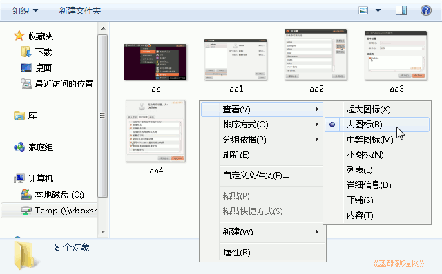
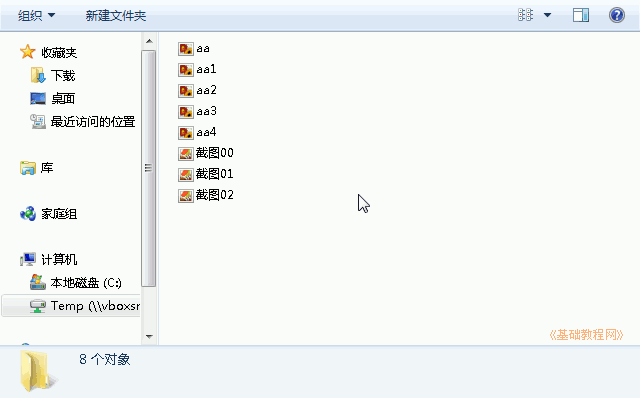
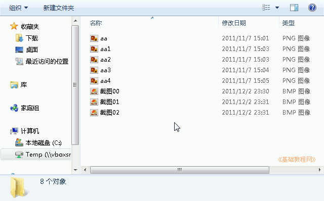
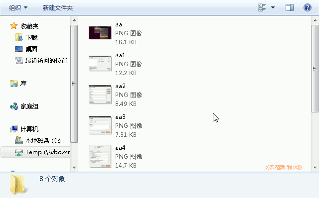
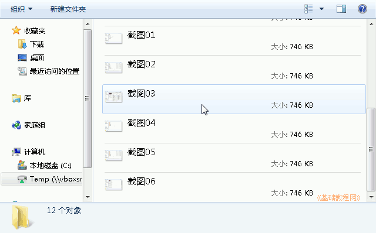

Windows7 基础入门教程
作者：TeliuTe 来源：基础教程网
二十三、查看方式 返回目录 下一课文件夹中的文件比较多时，我们可以选择不同的查看方式；
1、查看方式
1）点任务栏上的“库”文件夹图标，打开一个文件夹；
2）在文件夹空白处点击鼠标右键，再移到“查看”上，默认是“大图标”，可以看到文件的缩略图；

3）选择下边的“列表”，将以缩小的图标紧凑排列；

4）选择“详细内容”，除了列出图标名称外，还有修改日期和类型；

5）选择“平铺”，将显示内容和列表形式排列；

6）选择“内容”，可以看到文件的名称、大小等信息；

本节学习了查看方式的基础知识，如果你成功地完成了练习，请继续学习下一课内容；
本教程由86团学校TeliuTe制作|著作权所有
基础教程网：>http://teliute.org/
美丽的校园……
转载和引用本站内容，请保留版权信息和本站链接。